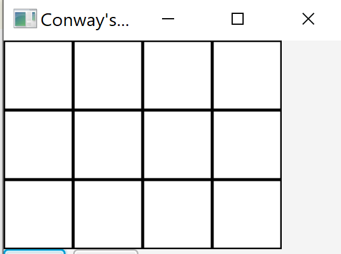

GLM-Sprint2: basi di conoscenza¶
Il consiste nel:
estendere il file GridSupport.kt introdotto in GLM-Sprint1: sottosistema di I/O, con nuove funzioni di utilità per la gestione della griglia, rappresentata anche attraverso descritte in Prolog;
creare files che includono la rappresentazione Prolog di Basi di conoscenza sulla griglia;
definire una prima, semplice versione dell’attore destinato a definire il comportamento delle celle del gioco.
Impostiamo il modello del sistema nel file: gamelifeactors1.qak.
GridSupport.kt¶
genNeighborsNames: genera i nomi delle celle vicine a una cella di coordinate
row,colgenNeighbornsDescr: genera una stringa contenente fatti Prolog del tipo
nb(c_x_y,[<NomiCelleVicine>]), cioè la lista dei nomi delle celle vicine a una cella di coordinatex,ye quindi di nomec_x_ye salva la stringa in un filegenCellDescr: genera descrizione di cella della forma
cell(c_x_y,localctx)genLocalGriddescr: costruisce due files che descrivono in sintassi Prolog informazioni (fatti) relative a una griglia, in forma di
Una volta create le basi di conoscenza relative a una griglia, altre funzioni possono usare queste conoscenze per ‘dedurre’ ulteriori informazioni utili. Più avanti introdurremo:
getCellNamesInContext: restituisce la lista dei nomi delle celle in forma di Struct (List) Prolog
createCellsInternal: crea in modo dinamico le celle locali al contesto di un dato attore, usando il metodo , cha fa parte del patrimonio dei metodi di ogni attore.
createActorDynamically¶
Riportiamo il metodo definito in ActorBasic.kt
fun createActorDynamically(actorName:String,
instanceSuffix:String, isconfined:Boolean ):String{
val actorClass = sysUtil.solve("qactor($actorName, ${context!!.name},CLASS)","CLASS")
val className = actorClass!!.replace("'","")
executorNameCounter++
if(instanceSuffix.contains("_")) executorName = actorName+instanceSuffix
else executorName = actorName+executorNameCounter
sysUtil.createActorFsm(context!!, executorName, className, argscope, isconfined )
return executorName
}
genNeighborsNames¶
Genera i nomi delle celle vicine a quella di ccordinate x,y |
@JvmStatic fun genNeighborsNames(
rNum: Int, cNum: Int, x: Int, y: Int): String? {
var outS = ""
val nb = java.lang.StringBuilder()
for (i in -1..1) {
for (j in -1..1) {
if ( (i == 0) and (j == 0) ) continue
val x1 = x + i
val y1 = y + j
if (x1 >= 0 && x1 < rNum && y1 >= 0 && y1 < cNum) {
val cell = ",c_" + x1 + "_" + y1
nb.append(cell)
}
}
}
outS = nb.toString().replaceFirst(",".toRegex(), "")
return "[$outS]"
}
|
genNeighbornsDescr¶
Genera una stringa contenente fatti del tipo
cioè la lista dei nomi delle celle vicine a una cella
di coordinate |
@JvmStatic fun genNeighbornsDescr(
rNum: Int, cNum: Int, fName: String?) {
var outS = ""
val grid = java.lang.StringBuilder()
for (i in 0 until rNum) {
for (j in 0 until cNum) {
val cell = "c_" + i + "_" + j
val nbs=genNeighbors(rNum, cNum,i,j)
grid.append("nb($cell,$nbs).\n")
}
}
outS = grid.toString()
saveOnFile(outS, fName)
}
|
getCellNeighbors¶
Fornisce la lista dei nomi delle celle vicine a una cella data usando la conoscenza del file cellnbs.pl |
@JvmStatic fun getCellNeighbors(x:Int,y:Int):Vector<Term> {
sysUtil.loadTheory("cellnbs.pl")
val nblist = Vector<Term>()
val goal = "nb(c_" + x + "_" + y + ",L)."
//esempio di goal: nb(c_0_0,[c_0_1,c_1_0,c_1_1]).
val sol = sysUtil.getPrologEngine().solve(goal)
if (sol.isSuccess) {
val t = sol.getVarValue("L") as Struct
if (t.isList) {
val it = t.listIterator() as Iterator<Term>
while (it.hasNext()) {
nblist.add(it.next())
}
return nblist
} else throw Exception("GridSupport | ...")
} else throw Exception("GridSupport | ...")
}
|
genCellDescr¶
Crea descrizione di cella della forma:
Si noti che l’indice della prima riga non è 0 di default, ma è il valore dato dal parametro firstRowIndex. Questo è un punto di flessibilità che sarà utile in seguito. |
@JvmStatic fun genCellDescr(ctx: String,
firstRowIndex: Int,
rowsN: Int, colsN: Int): String? {
var outS = ""
val grid = StringBuilder()
for (i in 0 until rowsN) {
for (j in 0 until colsN) {
val cell = "c_" + (firstRowIndex+i)+"_"+j
grid.append("cell($cell,$ctx).\n")
}
}
outS = grid.toString()
return outS
}
|
Basi di conoscenza sulla griglia¶
Attraverso le precedenti funzioni di GridSupport.kt, è possibile creare files che includono la rappresentazione Prolog di basi di conoscenza sulla griglia, come ad esempio:
il file cellnbs.pl che include una sequenza di fatti, ciascuno ei quali correla il nome di una cella alla la lista dei nomi delle sue celle vicine;
il file grid.pl che include una sequenza di fatti, ciascuno ei quali correla il nome di una cella (attore) al contesto in cui è definita.
I files cellnbs.pl e grid.pl¶
Ad esempio, se il file
La rappresentazione grafica della griglia è quella della figura qui a fianco. Il file cellnbs.pl contiene: nb(c_0_0,[c_0_1,c_1_0,c_1_1]).
nb(c_0_1,[c_0_0,c_0_2,c_1_0,c_1_1,c_1_2]).
nb(c_0_2,[c_0_1,c_0_3,c_1_1,c_1_2,c_1_3]).
nb(c_0_3,[c_0_2,c_1_2,c_1_3]).
nb(c_1_0,[c_0_0,c_0_1,c_1_1,c_2_0,c_2_1]).
nb(c_1_1,[c_0_0,c_0_1,c_0_2,c_1_0,c_1_2,c_2_0,c_2_1,c_2_2]).
nb(c_1_2,[c_0_1,c_0_2,c_0_3,c_1_1,c_1_3,c_2_1,c_2_2,c_2_3]).
nb(c_1_3,[c_0_2,c_0_3,c_1_2,c_2_2,c_2_3]).
nb(c_2_0,[c_1_0,c_1_1,c_2_1]).
nb(c_2_1,[c_1_0,c_1_1,c_1_2,c_2_0,c_2_2]).
nb(c_2_2,[c_1_1,c_1_2,c_1_3,c_2_1,c_2_3]).
nb(c_2_3,[c_1_2,c_1_3,c_2_2]).
|

Il file grid.pl contiene: cell(c_0_0,ctxconwayactors).
cell(c_0_1,ctxconwayactors).
cell(c_0_2,ctxconwayactors).
cell(c_0_3,ctxconwayactors).
cell(c_1_0,ctxconwayactors).
cell(c_1_1,ctxconwayactors).
cell(c_1_2,ctxconwayactors).
cell(c_1_3,ctxconwayactors).
cell(c_2_0,ctxconwayactors).
cell(c_2_1,ctxconwayactors).
cell(c_2_2,ctxconwayactors).
cell(c_2_3,ctxconwayactors).
|
{kind=link}
Per ottenere il corretto funzionamento di questa versione, le celle hanno bisogno della base di conoscenza descritta nei file grid.pl, in quanto, come vedermo verranno costruite in modo dinamico proprio consultando questa KB (si veda in createCellsInternal e gridcreator) .
La base di conoscenza descritta nei files cellnbs.pl non è strettamente necessaria, in quanto la lista dei nomi delle celle adiacenti a una cella data si può costruire invocando la funzione genNeighborsNames.
In ogni caso, conviene introdurre una nuova funzione di utilità per costruire entrambe queste basi di conoscenza.
genLocalGriddescr¶
costruisce due files che descrivono in sintassi Prolog la rappresentazione delle basi di conoscenza come quelle dell’esempio I files cellnbs.pl e grid.pl:
|
@JvmStatic fun genLocalGriddescr(
localCtxName:String,
RowsN : Int, ColsN : Int,
neighBornFName:String, cellsFName:String){
val d = genCellDescr(localCtxName,0,RowsN,ColsN )
saveOnFile(d,cellsFName)
genNeighbornsDescr(RowsN,ColsN,neighBornFName)
}
|
Aggiornamento della base di conoscenza dell’Actor¶
Una volta prodotta, in un file testo, la rappresentazione Prolog di una base di conoscenza, questa può essere caricata all’interno della base di conoscenza di un attore attraverso la funzione di utilità:
sysUtil.loadTheory(<FileName>)
sysUtil¶
sysUtil.kt è un object Kotlin definito nella Infrastruttura qak, che offre una classe sysUtil
gamemock come tester della base di conoscenza¶
Nel modello gamelifeactors1.qak, ridefiniamo l’attore gamemock in modo da invocare, nel suo stato iniziale, la funzione genLocalGriddescr, realizzando un primo test sul suo funzionamento.
Ad esempio:
Se il file
La rappresentazione grafica delle griglia si presenta così: |
Lo stato iniziale di
gamemock invoca genLocalGriddescr per creare i files
QActor gamemock context ctxconwayactors{
[# var RowsN = 0; var ColsN=0; var CellSize=0
val neighBornFName = "cellnbs.pl"
val cellsFName = "grid.pl"
lateinit var CellNamesList : alice.tuprolog.Term
#]
State s0 initial{
[#
val res =
conway.GridSupport.readGridConfig("gridConfig.json")
RowsN = res.get(0)
ColsN = res.get(1)
conway.GridSupport.genLocalGriddescr(
context!!.name,
RowsN,ColsN,neighBornFName,cellsFName)
#]
}
Goto usekb
|
Uso del file cellsFName¶
Per verificare come il contenuto del file cellsFName possa essere usato
a livello applicativo, impostiamo lo stato usekb
come segue:
|
State usekb{
[#
//Carica la base di conoscenza
/*1*/ sysUtil.loadTheory(cellsFName)
//Imposta un goal
/*2*/ val goal =
"findall(C,cell(C,${context!!.name} ),CELLS)."
//Dimostra il goal, con il binding di CELLS
val sol = sysUtil.getPrologEngine().solve( goal)
if (sol.isSuccess) {
CellNamesList = sol.getVarValue("CELLS")
/*3*/ CommUtils.outblue("$t") //Visualizza
}
#]
}
|
Il risultato di questa fase è la lista (una Struct tuProlog):
[c_0_0,c_0_1,c_0_2,c_0_3,c_1_0,c_1_1,c_1_2,c_1_3,c_2_0,c_2_1,c_2_2,c_2_3]
Al solito, è conveniente definire una funzione di supporto capace di restituire la lista dei nomi delle celle nascondendo i dettagli dell’uso del Prolog.
getCellNamesInContext¶
restituisce la lista dei nomi delle celle di un dato contesto, nascondendo i dettagli (legati al Prolog) relativi a come ciò viene ottenuto. |
//ASSUNZIONE: KB locale già aggiornata con grid.pl
fun getCellNamesInContext(ctx: String): Struct? {
val goal= "findall( C, cell( C,$ctx ),CELLS)."
val sol = sysUtil.getPrologEngine().solve(goal)
if (sol.isSuccess) {
return sol.getVarValue("CELLS") as Struct //List
} else return null
}
|
Esempio di uso della KB di un Actor¶
Con questa nuova funzione, il codice dello stato usekb si semplifica notevolmente.
|
State usekb{
[#
//Carica la base di conoscenza
/*1*/ sysUtil.loadTheory(cellsFName)
val ctx = context!!.name
/*2*/ val cells =
conway.GridSupport.getCellNamesInContext(ctx)
#]
/*3*/ println("$name | cell names:\n $cells" )
}
/*4*/Goto createCells
|
Al termine della sua attività, lo stato usekb transita nello stato createCells che ci introduce al tema della creazione e configurazione dinamica delle celle.
Prima di procedere, creiamo una uletriore funzione di utilità, che crea in modo dinamico un insieme di celle.
createCellsInternal¶
Questa funzione di utilità definita in GridSupport.kt, crea in modo dinamico le celle locali al contesto di un dato attore.
|
@JvmStatic
fun createCellsInternal( a : ActorBasic) {
/*1*/ val cellsList=
getCellNamesInContext(a.context!!.name);
if (cellsList != null) {
val cells =
cellsList.listIterator() as Iterator<Term>
while (cells.hasNext()) {
val nextSuffix = cells.next().toString()
val isconfined = false
/*2*/ val name = a.createActorDynamically(
"cell", nextSuffix, isconfined)
}
}
}
|
Usando questa funzione, definiamo il funzionamento dello stato createCells.
Creazione dinamica di celle-attori¶
|
State createCells{
[#
/*1*/conway.GridSupport.createCellsInternal(myself)
#]
//Controllo degli attori nel contesto ...
[#
/*2*/val actorNames = sysUtil.getAllActorNames()
#]
/*3*/println("$actorNames") color magenta
}
|
Output Il controllo degli attori fornisce (su una unica linea): |
[griddisplay, cell, gamemock,
cellc_0_0, cellc_0_1, cellc_0_2, cellc_0_3, cellc_0_4,
cellc_1_0, cellc_1_1, cellc_1_2, cellc_1_3, cellc_1_4,
cellc_2_0, cellc_2_1, cellc_2_2, cellc_2_3, cellc_2_4,
cellc_3_0, cellc_3_1, cellc_3_2, cellc_3_3, cellc_3_4,
cellc_4_0, cellc_4_1, cellc_4_2, cellc_4_3, cellc_4_4]
|
Le celle come attori¶
Definiamo ora una prima, semplice versione dell’attore destinato a definire il comportamento delle celle del gioco.
QActor cell context ctxconwayactors dynamicOnly{
State s0 initial{
[# val coords=
conway.GridSupport.getCellCoords(MyName)
val Dt = 400L * (coords[0]+coords[1])
#]
delayVar Dt
forward griddisplay -m
todisplay:todisplay($MyName,true)
}
}
Nel linguaggio qak, il qualificatore
impedisca la creazione statica dell’attore. |

|
A questo punto, salviamo il modello corrente nel file gamelifeactors1.qaktt e procediamo con un nuovo passo di sviluppo tutto dedicato alla GLM: Analisi del problema che nasce dalla .